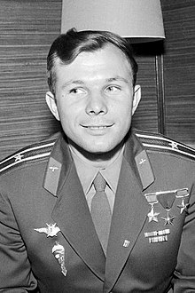

People
The Who's who of the future of human society
Yuri Gagarin

A soviet pilot and cosmonaut; the first human in outer space and completed the first orbit of the Earth on April 12, 1961. Celebrated by both the United States and the Soviet Union, as it was an accomplishment for the human race, not just the Soviet Union. After his death in a fighter jet accident in 1968, the Fédération Aéronautique Internationale created an award in his honor known as the Yuri A. Gagarin Gold Medal, he was awarded it after his death.
John F. Kennedy
The 35th president of the United States. Made the bold claim that the United States would get a man on the moon before 1970, which he was correct about, but unfortunately, did not live to see, as he was assassinated in 1963. Famously said
We choose to go to the moon. We choose to go to the Moon in this decade and do other things, not because they are easy, but because they are hard, because that goal will serve to organize and measure the best of our energies and skills, because that challenge is one that we are willing to accept, one we are unwilling to postpone, and one which we intend to win.